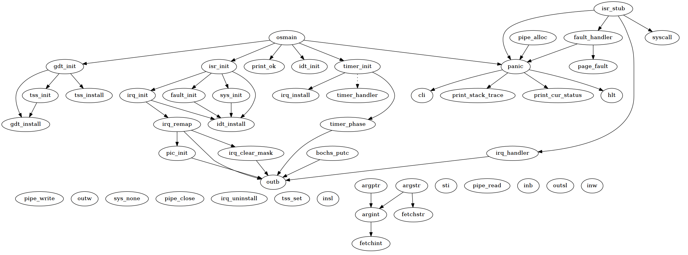
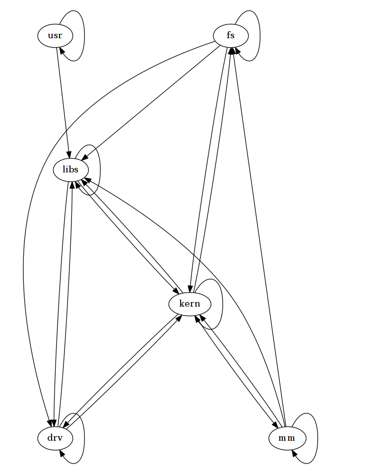

从 C 源码生成 函数/模块 调用图
Contents
从 C 源码生成 函数/模块 调用图#
提示
这是一篇迁移自 Jekyll 的文章，如有格式问题，可到 ⛺SilverRainZ/bullet 反馈
前天是操作系统课程设计的截止日期，这意味这 OS67 这个坑 已经告一段落了，接下来的事情是写报告，不过鉴于 OS 的老师这一学期都没出现过， 报告应该可以随便水过去，据说连答辩都可以省掉了……
前面说的都是废话，报告里要求画出函数调用图，于是就打算直接用软件生成好了。
用到的软件有 graphviz，egyptAUR，cinclude2dotAUR，
👤farseerfc 推荐了 makepp，
然而 AUR 里面没有就作罢了。
生成函数调用图#
安装 egypt 直接 yaourt -S egypt 即可，
之后在 makefile 里面的 CFLAG 里面增加一句 -fdump-rtl-expand，
再 make 一次，gcc 会在 bulid 目录下生成 *.expand 文件，
这是 egypt 生成 call graph 所需要的信息。
我这里生成的文件的后缀都是
*.192r.expand，并不知道是什么意思……
之后执行 egypt *.expand > main.dot
就能生成代表整个项目里所有的 C 函数的调用关系的 dot 文件了。
dot 文件大概长这样，每一行代表连接两个顶点的边 用 Graphviz 的 dot 命令可以从 dot 文件生成 png。
digraph callgraph {
"move_cur" -> "outb" [style=solid];
"cls" -> "move_cur" [style=solid];
"iunlock" -> "panic" [style=solid];
"puts" -> "putchar" [style=solid];
"puts" -> "_puts" [style=solid];
"sys_sleep" -> "argint" [style=solid];
"sys_sleep" -> "sleep" [style=solid];
"sys_unlink" -> "iupdate" [style=solid];
...
执行 dot main.dot -Tpng -o main.png，于是从整个 OS67 生成了这么一张可怕的图片：
这么大的图片用在报告里显然是不行的，不过函数间的调用逻辑也就那样了， 没法做什么简化，所以对于整个项目我只生成了后面的模块调用图。
既然整个项目的图太大了，那就生成模块内部的调用图好了，OS67 的项目结构长这样， 模块和文件夹基本上是一一对应的：
$ tree -d
.
├── bin
│ └── rootfs
├── boot # bootloader
├── dev # 设备文件
├── drv # 驱动程序
├── fs # 文件系统
├── inc # 头文件
├── kern # 保护模式相关代码
├── libs # 库文件
├── lst
├── mm # 内存管理
├── notes
├── proc # 进程管理
├── script # 各种配置文件和链接脚本
└── usr # 用户例程
需要生成调用图的模块有 dev drv fs kern libs mm proc，来写个小脚本自动生成好了：
#!/usr/bin/sh
mods='dev drv fs kern libs mm proc'
for arg in $mods; do
files=`ls -1 $arg/ | grep '\.c' | sed 's/\.c/.c.192r.expand/g'`
cd bin
egypt $files > $arg.dot
dot $arg.dot -Tpng -o ../$arg.png
cd ..
done
生成出来的图片除了 fs 模块比较大之外其他都还行，下面是 kern 模块的 call graph （用 kolourpaint 做了点调整）：
注意：这里没有处理 boot 模块和 usr 模块，因为 boot 里面都是汇编程序， 而 usr 里面的用户程序都有 main 函数会导致冲突而画出奇怪的图，所以就没有包含了。
另外 graphviz 还支持把 dot 文件转成 dia 格式，所以如果对各个顶点的位置不满意的话，我们可以用 Dia 来调整。
刚说完就被打脸了，graphviz 的 dia 输出支持在 2.26.0 的时候被移除了。
生成模块调用图#
接下来来生成模块间的调用图吧， 我在网上找到一个根据 #include 生成文件间调用关系的 dot 的 prel 脚本： flourish.org/cinclude2dot/。
AUR 里面没有所以顺手给打了一个包：
cinclude2dot\ :sup:`AUR<https://aur.archlinux.org/packages/cinclude2dot/>`_， 所以现在也可以直接用 yaourt 装 cinclude2dot 了。
执行 cinclude2dot --include inc > main.dot 会在当前目录递归地找 *.c 文件，
然后在 inc 目录找对应的头文件，生成 c 文件到头文件包含关系的 dot 文件。
如果启用 --merge module 的话，会把 xxx.c 和 xxx.h 合并为一个模块 xxx，
然而这样生成的图片还是太大了点。
cinclude2dot 还提供了一个 --merge directory 选项，把相同目录的文件合并为一个模块，
这正是我想要的功能，然而这样生成的图过分简单，
所有的目录都指向了存放头文件的目录 inc。试了一下 directory 和 module 选项也不能一起用，
果然还是得自己在 dot 文件上改一改。
执行 cinclude2dot --include inc --merge module > $dotfile，得到各个「文件」间的调用关系。
digraph "source tree" {
"ls" -> "usys"
"tty" -> "printk"
"ide" -> "isr"
"dev" -> "tty"
"isr" -> "vmm"
"cinit" -> "uio"
"p2i" -> "type"
"proc" -> "isr"
"fstest" -> "string"
"timer" -> "isr"
...
如果 dev/tty.c 包含了 inc/printk.h，说明它调用了 libs/printk.c 里的函数，
那就有关系 "tty" -> "printk"，
那可以考虑把文件名替换为该文件所在的目录名，那关系就变成了 "dev" -> "libs"。
这样替换要注意的是：
不能将头文件目录当成一个模块，如
"tty" -> "printk"的关系的右边本来就是一个头文件， 在这里它应当属于 libs 模块而不属于 inc， 如果强行加入 inc 的话结果就和上面用--merge directory的效果差不多了： 每个顶点会都指向 inc排除 inc 后，要注意的是有些只包含宏定义的头文件并没有对应的
*.c文件， 比如上面的"p2i" -> "type"存在 inc/type.h ，但是并没有 type.c 这么一个文件， 那么这一行应当删除掉将文件名替换成目录名后会出现重复的项目，
"ide" -> "printk"和"vga" -> "printk"替换后的结果都是"drv" -> "libs"，需要去重
把这些事情交给脚本吧，从每个要统计的模块（目录）里面取得文件列表，
把文件名替换为目录名，去除单独的 *.h 文件对应的行，去除重复行。
#!/usr/bin/sh
mods='kern drv proc mm usr dev fs libs'
dotfile=main.dot
cinclude2dot --include inc --merge module > $dotfile
for arg in $mods; do
files=`ls -1 $arg | cut -f 1 -d '.'`
for f in $files; do
sed -i "s/\"$f\"/\"$arg\"/g" $dotfile
done
done
files=`ls -1 inc | cut -f 1 -d '.'`
for f in $files; do sed -i "/$f/d" $dotfile; done
awk ' !x[$0]++' $dotfile > tmpfile
mv tmpfile $dotfile
dot $dotfile -Tpng -o ${dotfile%.*}.png
最后我们得到了一张还算不错的， OS67 的模块调用关系图：
好困睡觉。
评论
如果你有任何意见，请在此评论。 如果你留下了电子邮箱，我可能会通过 回复你。